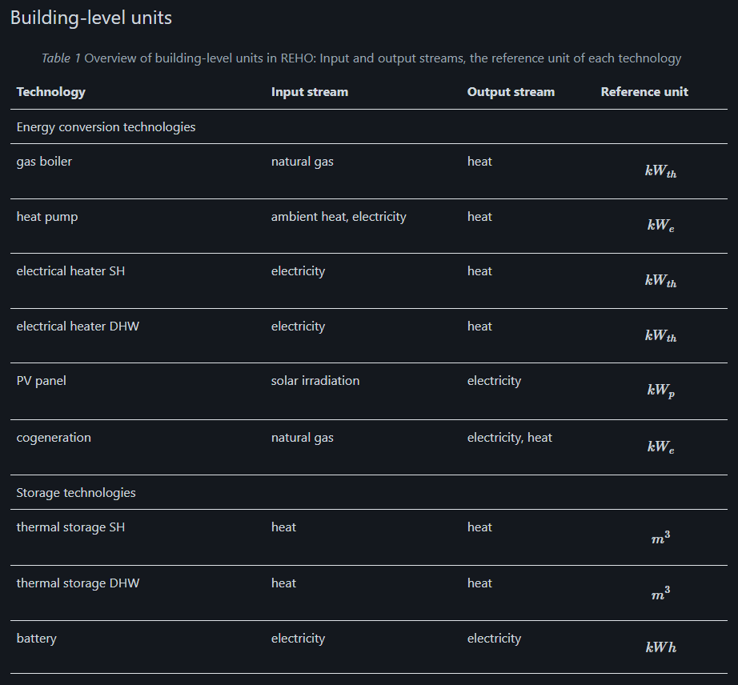
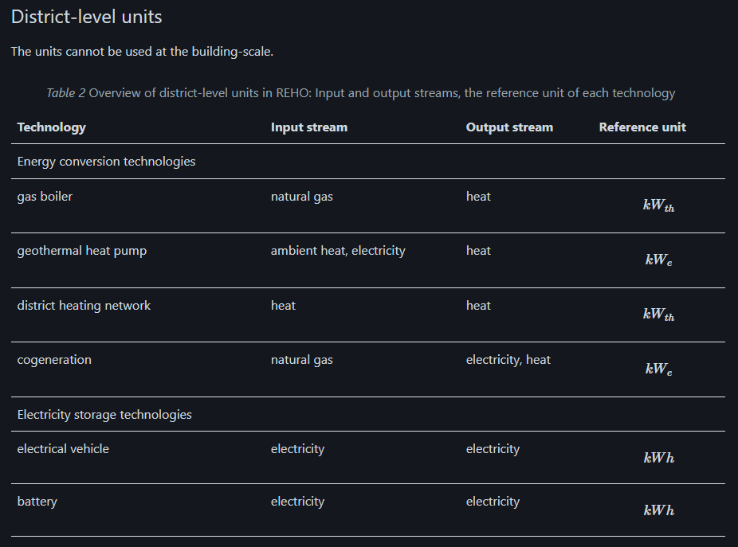

Internship logs from Apr.22 to Apr.27
This week’s key point is to conclude the LCA methodology used in REHO.
Several questions to be answered:
- What is REHO?
- Current LCA situation in REHO?
- LCA level we would like to reach in REHO?
- Which technologies are pilots specific? Which ones are always the same whatever the geography?
22/04/2024 - 24/04/2024
Materials read: Official website, “Model” page
For a delimited perimeter of buildings, REHO selects the optimal energy system configuration minimizing the specified objective function.
Several energy demandes are considered:
- Thermal comfort
- DHW
- Domestic electricity
- Mobility needs
Domestic electricity, DHW, and mobility needs are generated using standardized profiles according to norms or measurements in a pre-processing step. -> Typical profiles, a better understanding of energy consumer’s behavior
Question: Why is thermal comfort “modeled within the framework itself”?

model inputs
- EUDs, End Use Demands, from the meteorological data and the buildings characteristics
- The resources to which it has access to provide those EUDs, namely grids
- the equipments that can be used to convert those resources into the required services
End use demand profiles
- demand profile for domestic hot water
- demand profile for domestic electricity
- demand profile for spacing heating
- internal heat gains from the occupancy
- internal heat gains from electric appliances
- heat exchange with the exterior
- solar gains from the irradiance
Question: Where is mobility?
Building characteristics (usage type, morphology and heat performance)
Usage
I to XII, diffferent room type and usage
Morphology
- Energy reference area (ERA) \(A_{ERA}[m^{2}]\)
- Roof Surfaces \(A_{roofs}[m^2]\)
- Facades surfaces \(A_{surfaces}[m^2]\)
- Glass fraction \(g^{glass}[-]\)
Question: What is energy surface area?
Heating performance
- Year of construction or renovaion
- Quality of thermal envelop
- Overall heat transfer coefficient \(U_{h}[kW/K/m^2]\)
- Heat capacity coefficient \(C_{h}[Wh/K/m^2]\)
- Temperatures of supply and return for heating system \(T_{h,supply} - T_{h, return}[{^\circ}C]\)
- Temperatures of supply and return for cooling system \(T_{c,supply} - T_{c, return}[{^\circ}C]\)
- Reference indoor temperature \(T_{in}[{^\circ}C]\)
Question: What means supply temperature and what means return temperature?
Weather data
- Outdoor ambient temperature (yearly profile) \(T_{out}[^{\circ}C]\)
- Global horizontal irradiation (yearly profile) \(Irr_{out}[^{\circ}C]\)
They use k-medoids clustering algorithm in REHO. (global irradiation and ambient temperature)
NB: Extreme periods are also considered, but only for the design of the capacities.
Grids
In the REHO model, a grid is characterized by the energy carrier its transports and its specifications.
Energy layers
- Electricity
- Natural gas
- Oil
- District heat
- Data (ICT service)
Question: What is ICT service?
These layers are modeled through parameters that can be changed in the model:
- import and export tariffs
- carbon content
- Environmental impact
They only have 3 criterias for LCA: - Land use - Human toxicity - Water pollutants
Specifications
Cost, environmental impact, maximal capacity for district imports and exports
Equipments
The units are parametrized by:
- Special cost (fixed and variable costs, valid for a limited range (\(f_{min}, f_{max}\)))
- Environmental impacts (= grey energy encompassing the manufacturing of the unit, and distributed over the lifetime of the unit)
- Thermodynamics properties (efficiency, temperature f operation)
 
Model
As objectives can be generally competing, the problem can be approached using a Multi-Objective Optimization (MOO) approach. MOO is implemented using the \(\epsilon\) -constraint method to generate Pareto curves.
For the details, see the website. (There are some mistakes but still understandable)
Questions: - relationship between typical periods and time - what is literation intervals - what is l? layers or linearization time? - what is b? what means bare module?
Objective function
Annual operating expenses
energy import tariff - energy output tarrif during one year
when “gr” and “+” together means the electricity from the grid
when “gr” and “-” together means the electricity to the grid
This is wrong: Resource -[supply]-> grid -[demand]-> residence
Annual capital expenses
capital cost = invest + replacement
invest = bare module * (fixed investment cost * use or not decision variable + continuous investment cost * size)
replacement = similar to invest
Annual total expenses
total = capital + operation
Global warming potential
bes = building energy system
\(gwp_{op}\) = import tarrif - output tarrif
\(gwp_{bes}\) = bare module * (fixed gwp * use or not decision variable + continuous gwp * size)
Building level constraints
Sizing constraints
size f is limitted to a feasible range.
Energy balance
energy obtained from the renewable resources + energy from the grid = energy to the grid + energy consumed by units + energy consumed by buildings
Fresh water or natural gas supply = its demand
Heat casade
the change of residual heat = heating - cooling
boundary condition
Thermal comfort
Space heating = heat gained - heat exchange from internal to external - stored heat change with time
heat gain = heat originated from units + irradiation
heat originated from units calculation is based on SIA 2024:2015 and include the rooms usage
heat obtained from irradiation is easy to handle with
Note: The internal building temperature is considered as a variable to be optimized. This allows the building heat capacity to work as an additional, free thermal storage for the building energy system, thus making it possible to use available surplus electricity, which was generated onsite
There will also be a comfort penalty cost in objective function in objective function.
Domestic hot water
Domestic electricity
District-level constraints
Dantzig-Wolfe algorithm
I spent some time on this algorithm. Basically it decomposed this question to sub problems according to buildings. It will solve the problem iteratively until it is convergent.
Original metrics => master problem + sub problems
sub problems will return information (base variables and corresbonding conlumns) to the master problem and master problem will update its information (objective function, constraints matrics and bases) and solve to get the dual variables. Dual variables will be given to the sub problems again to update their objective functions.
Grid Capacity
energy from grid to buildings - energy from buildings to grid = energy from outside
Outputs
Decision variables:
Installed capacities for building-level and district-level units
Operation time throughout a year
Conclusion
Relevance between LCA and cost
In the REHO framework, LCA indicators are treated similarly to cost calculations. Although the analogy may not seem obvious from the formulas related to life cycle assessment, I will clarify the similarities with a simple example.
Essentially, when constructing units, such as carbon capture systems, we invest money with the expectation of earning returns. Similarly, we expend carbon footprints on this equipment, hoping to capture carbon emissions in return.
From a broader perspective, we invest both money and carbon footprints in our systems.
For energy, the cost is calculated as the price paid for electricity purchased from the grid minus the revenue from electricity sold back to the grid. The GWP (Global Warming Potential) calculation follows a similar principle: the carbon footprints associated with electricity purchased from the grid are offset by the carbon footprints credited back for the electricity returned to the grid.
Regarding the units, costs are calculated by summing the fixed costs and the variable costs, which depend on the unit size. Similarly, CO2 emissions are calculated as the sum of the fixed carbon investment plus the variable carbon emissions based on unit size.
What should I focus on in the scripts reading?
- what they use as the fixed environmental impact and continuous environmental impact?
- According to the reading, they didnt achieve the MOO. (The GWP objective function is isolated with the annual total expenses)
- The LCA status I am able to contribute:
- Relying only on Global Warming Potential (GWP) is insufficient for a comprehensive environmental impact assessment. A broader range of environmental indicators is necessary to capture the full impact.
- Based on previous studies, there is a noticeable scale effect in the manufacturing of these units, indicating that the relationship between the size of the units and their environmental and cost impacts is not linear. This complexity needs to be accurately modeled in the LCA.
- While the cost analysis includes a provision for “replacement cost,” the environmental impact assessments fail to include a corresponding environmental cost for replacement activities. This omission could lead to an underestimation of the environmental impacts over the lifecycle of the units.
25/04/2024 - 26/04/2024
Scripts reading
Combine the “package structure” in the official website
Objective for scripts reading: Read the results filefolders and understand each function and parameter in these functions. Learn how to use these scripts.

Indeed, based on the diagram, we have been able to see what are the model’s inputs and outputs, as well as its algorithm.
data/
elcom/
id + commune + operator
emissions/
Question: what are the meaning of the columns? And I also would like to know the source of these datas. Since they are different from what I see in the ecoinvent.
infrastructure/
This filefolder contains a lot of information related to units. Nevertheless,
- in building_units.csv and district_units.csv, for the LCA part, they have 13 kinds of LCA indicators and for each indicator they use “xxx_1” & “xxx_2”. I guess it means the “fixed environmental impacts” and “continuous environmental impacts”.
- in grids.csv, the demand cost for environmental impacts are nearly 0 compared to the supply cost.
- HP_parameters.txt is super confusing for the 1st column and 2nd column.
- storage_units.csv: everything related to lifecycle impacts is 0
Question: Same with last question
QBbuildings/
Tried to log in but failed.
SIA/
There are 2 csv files inside: 1 for properties for different types of rooms; 1 for the rooms compositions for different buildings. Everything is in French.
skydome/
irradiation data is based on the data in 2005.
weather/
datasets for weather.
model/
param penalty_ratio default 1e-6;
var penalties default 0;
subject to penalties_contraints:
penalties = penalty_ratio * (Costs_inv + Costs_op + sum{k in Lca_kpi} lca_tot[k] +
sum{l in ResourceBalances,p in PeriodExtrem,t in Time[p]} (Network_supply[l,p,t] + Network_demand[l,p,t])) + Costs_cft;
# objective functions
minimize TOTEX:
Costs_tot + Costs_grid_connection + penalties;
minimize OPEX:
Costs_op + Costs_grid_connection + penalties;
minimize CAPEX: # the second term is added to correspond to objective set in design_cst
Costs_inv + penalties;
minimize GWP:
GWP_tot + penalties;
minimize Human_toxicity:
lca_tot["Human_toxicity"] + penalties;
minimize land_use:
lca_tot["land_use"] + penalties;
- In the objective functions, we choose a objective to optimize. It’s not like we optimize every objective together.
- Indeed the “+penalties” means the integration of LCA with the cost but for now the penalties are almost 0.
- Cost_cft is the comfort penalties.

input: - scenario: - objective (opex, capex, totex, …), with 2 objectives, you will draw a Pareto curve(indeed I am not sure if it’s pareto curve. There will be some things more like a sankey or ba) -
To be continued